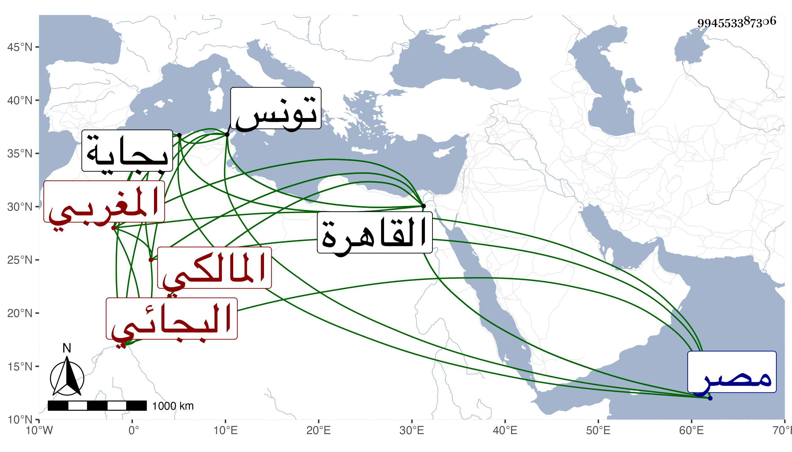

0902Sakhawi.DawLamic.ITO20230111-ara1.EIS1600.994553387306
Biography ID: 994553387306
640
حمزة بن محمد بن حسن بن علي بن عبد الحكيم البجائي المغربي المالكي نزيل الشيخونية . ولد تقريبا سنة تسع وثلاثين وثمانمائة ببجاية وبها نشأ فقرأ القرآن وأخذ عن أبي القسم المشدالي وولده محمد الأصغر ، وهو غير أبي الفضل وغيرهما ، وقدم تونس في سنة ثمان وخمسين فأخذ بها عن جماعة منهم أبو إسحق إبراهيم الاخدري ولازمه وبه انتفع وتمهر في الأصلين والعربية والصرف والمعاني والبيان والمنطق والحكمة وهو متفاوت فيها فأعلاها الأصلان والمنطق ويليها المعاني ثم ما ذكر . وقدم القاهرة في شعبان سنة سبع وسبعين وحج منها ورجع فنزل في الخانقاه الشيخونية وقطنها ثم حج ثانيا رفيقا للسيد عبيد الله بن السيد عفيف الدين وجاور أيضا وأقرأ بها يسيرا ، ولازم وهو بالقاهرة درس التقي الحصني وبحث معه ، وكان الشيخ حسبما بلغني يثنى عليه وكذا اجتمع بالكافياجي والسيف وتكلم معهما ، وكان الكافياجي يجله كما سمعت أيضا وأقام منجمعا عن الناس متقنعا منقبضا وأقرأ الطلبة واجتمع به الفضلاء فكان من أعيان من اجتمع به المحيوي ابن تقي والخطيب الوزيري وقرأ عليه سعد الدين محمد السمديسي شيخ الجانبكية المطول في آخرين وطلبه السلطان بعد محنة إمامه الكركي فاجتمع به ومازحه وقرر له في الذخيرة كل سنة خمسين وفي الجوالي عوضا عمن مات اثنين وسبعين وقبل شفاعته في بعض الأمور وفي عمر بن عبد العزيز حتى أخرجه من المقشرة وعينه لكشف الجاولية مساعدة لمباشرها ابن الطولوني السمين . كل ذلك مع تقلل وتعزز وانقباض وانفراد بحيث لم يتزوج ، وربما وصل إليه بر بعض المغاربة ونحوهم قبل ذلك وبعده بل يعطي من يتجر له وقد سلمت عليه بعد قدومه من الحج المرة الثانية فابتهج ومشى معي من خلوته لباب المدرسة . والبعاث بأرض مصر يستنسر .
